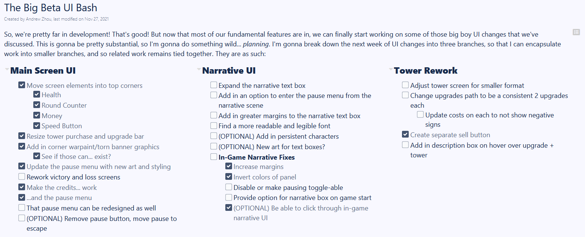
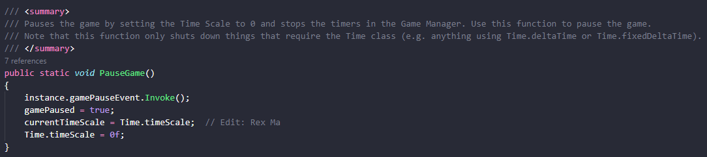
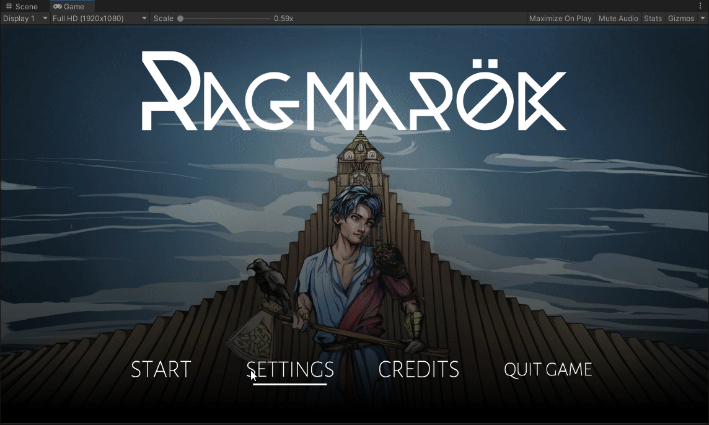

Pre-Beta 2
Nov 15 to Nov 28 - Big Beta UI Bash
Ok, fair warning - I did not complete 24 hours of work this sprint. In fact, I didn't even break 12. This is halfway due to the break occurring, but also partially due to some personal issues I've had to deal with throughout the last two weeks. Things are better now, and I look forward to pushing hard for the last couple of weeks of the game's development.
Once again, the bulk of my work for this sprint was programming and development - and once again, it was largely UI work. Let me break it down:
I understood that there was now a significant backlog of work that I needed to accomplish with the user interface, and that cramming all of that into one branch would not be easy or helpful. So, in order to keep related work together, I decided to do some planning. Below is a picture of "The Big Beta UI Bash", a document I wrote up in order to figure out what needed to be fixed and separate that into three categories. From there, we'd be able to see progress on all three major UI categories, as well as keep everything public and visible for all members to contribute to and discuss.
For the first part of actual development work, I decided to focus on what I felt was "gameplay critical" features - restoring functionality to the pause menu and credits. For context, the pause menu simply wouldn't work in-game and the credits soft-locked the game by not actually displaying. For the credits, this was a relatively simple fix - somehow, in the code that we use to manage the main screen, another developer had switched the boolean value of the pause menu from True to False in the GoToCreditsScreen() function in our MainMenuManager. How exactly this happened, I'll never know - possibly an error reintroduced by a merge conflict. Maybe one of these days we'll figure out an effective code review or QA automation scheme for the studio, but that's well beyond the scope of my job and of my time remaining at this university. Moving on.
The pause menu was also relatively easy to restore, albeit with it's own unique quirk - Let's talk about the General Library. The General Library is an attempt by WolverineSoft Studio members to create generalized and universal components for the studio to use. A noble pursuit, right - make coding of similar features easier across projects by giving us easy, drag-and-drop components that just work out of the box. As a result of this work, not only do general library scripts make up a large part of our current codebase, but developers are encouraged to use them over novel, game-specific implementations. Well, our pause menu code just happens to be taken from the General Library. Unfortunately for me, the "General" Library code isn't as general as we'd like it to be.
In the General Library, we find our code for pausing the game within the GameManager.cs. Now, this GameManager is intended to be a universal component that persists across the length of the game - as a result, GameManager is implemented as a singleton. Note the use of "instance" inside the PauseGame() function. As a result, this means that in order for our pause menu to actually work, this GameManager needs to be present. Otherwise, the code to activate the pause button simply doesn't exist within a scene. Now, this wouldn't be an issue if we made the game within one scene, but we didn't - the game is separated into multiple Unity scenes. That means instead, during the running of the game, we have to instantiate the GameManager at some point in active gameplay for it to persist across scenes - in Project Tower, we chose to do that in the main menu. This makes sense, but the ramifications of this choice means that if I, a developer, wanted to test the pause menu within the scene for say, Level One, than it would never work. This is because the GameManager was never instantiated and thus the code to pause the game doesn't exist. Instead, I have to do a somewhat hamfisted workaround in order to test pause functionality AT ALL:
If it isn't clear by now, I found this to be a rather annoying waste of time.
This could go into a larger conversation about how the way we've implemented the General Library ends up forcing us to make poor or strange code/design decisions that hamper our efficiency later in development; in a way contradicting the "drag-and-drop and it just works" intention of the General Library by forcing design patterns when they might not be neccessary. However, this is once again out of the scope of my tasks and also well beyond my time remaining here in the club. Alternatively, I could also talk about the fact that we are encouraged to use Text over the far more superior TextMeshPro because Text is what is referenced in General Library scripts, but I digress.
Oh, and I also added in new art to the pause menu.
Lastly, something good that is actually coming from me - new UI changes! Things to note:
So, some actual positive work towards UI changes from me! That is, if you ignore the fact that as of writing, these changes are unfortunately blocked by a merge conflict. Well, you win some and you lose some.
Same as always - time spent in studio meetings, although this week, I also spent time talking with Crystal of the narrative team in order to figure out narrative needs for the UI.
This sprint, I actually participated in some playtesting of my own! Although, to be fair, this was actually playtesting for Project Bloom for their level design, so I'm not sure if it counts.